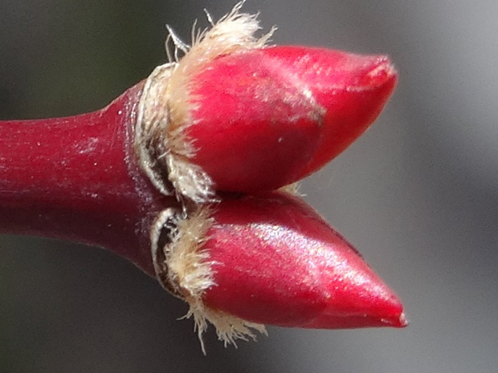

Почки - Leaf buds 3/22/09—5/4/18

Айвочка прекрасная - Chaenomeles speciosa
1 image

Актинидия коломикта, ползун - Actinidia kolomikta
7 images

Багрянник японский - Cercidiphyllum japonicum
6 images

Барбарис Бергмана - Berberis bergmanniae
3 images

Берёза пушистая, опушённая - Betula pubescens
3 images

Бересклет европейский - Euonymus europaea
1 image

Бузина обыкновенная - Sambucus racemosa
9 images

Вишня кислая - Prunus cerasus
22 images

Вишня птичья, Черешня - Prunus avium
8 images

Вишня Саржента - Prunus sargentii
7 images

Волчеягодник обыкновенный - Daphne mezereum
9 images

Вяз гладкий - Ulmus laevis
5 images

Гамамелис японский 'Цуккариниана' - Hamamelis japonica 'Zuccariniana'
3 images

Гортензия черешковая - Hydrangea petiolaris
5 images

Древогубец вьющийся - Celastrus scandens
3 images

Дуб обыкновенный - Quercus robur
8 images

Жимолость козья - Lonicera caprifolium
11 images

Жимолость обыкновенная - Lonicera xylosteum
19 images

Жостер скальный - Rhamnus saxatilis
2 images

Ива белая - Salix alba
2 images
Ива белая разнв. шелковистая - Salix alba var. sericea
11 images
Ива козья - Salix caprea
6 images
Ива козья разнв. козья - Salix caprea var. caprea
4 images
Ива остролистная - Salix acutifolia
3 images
Ива розмаринолистная - Salix rosmarinifolia
3 images
Ирга овальная - Amelanchier ovalis
14 images
Калина чёрная - Viburnum lantana
18 images
Кизил обыкновенный - Cornus mas
2 images
Кизильник огненный - Cotoneaster ignavus
3 images
Кизильник черный - Cotoneaster melanocarpus
11 images
Клён американский - Acer negundo
8 images
Клён белый, Явор - Acer pseudoplatanus
4 images
Клён бородатый - Acer barbinerve
4 images
Клён веерный - Acer palmatum
15 images
Клён ложнозибольдов - Acer pseudosieboldianum
5 images
Клён остролистный - Acer platanoides
4 images
Конский каштан обыкновенный - Aesculus hippocastanum
5 images
Лещина обыкновенная - Corylus avellana
1 image
Липа сердцевидная - Tilia cordata
7 images
Лиственница европейская - Larix decidua
17 images
Лох зонтичный - Elaeagnus umbellata
5 images
Лох серебристый - Elaeagnus commutata
2 images
Малина обыкновенная - Rubus idaeus
17 images
Малиноклен душистый - Rubus odoratus
6 images
Миндаль Петунникова - Prunus petunnikowii
9 images
Нотофагус антарктический, Ньире - Nothofagus antarctica
2 images
Облепиха крушиновидная - Hippophae rhamnoides
9 images
Ольха серая, белая, Елоха - Alnus incana
2 images
Ольха чёрная - Alnus glutinosa
2 images
Пятилисточник кустарниковый разн. манджурский - Pentaphylloides fruticosa var. mandshurica
7 images
Розелла, Гибискус сабдариффа - Hibiscus sabdariffa
1 image
Рябина обыкновенная - Sorbus aucuparia
6 images
Рябина черноплодная - Aronia melanocarpa
31 images
Рябинник рябинолистный - Sorbaria sorbifolia
7 images
Сибирка алтайская - Sibiraea altaiensis
8 images
Сирень обыкновенная - Syringa vulgaris
18 images
Смородина восковая - Ribes cereum
1 image
Спирея дубровколистная - Spiraea chamaedrifolia
1 image
Стефанандра Танаки - Stephanandra tanakae
4 images
Тёрн, Терновник, Слива колючая - Prunus spinosa
6 images
Таволга вязолистная - Filipendula ulmaria
16 images
Тернослива - Prunus domestica subsp. insititia
15 images
Тополь дрожащий, Осина - Populus tremula
3 images
Форзиция европейская - Forsythia europaea
9 images
Черёмуха, Церападус, Вишня Маака, медвежья, железистолистный, железистая - Prunus maackii
2 images
Черемуха обыкновенная - Prunus padus
4 images
Чозения толокнянколистная - Chosenia arbutifolia
4 images
Чубушник венечный - Philadelphus coronarius
31 images
Шиповник американский - Rosa blanda
3 images
Шиповник блестящий - Rosa nitida
3 images
Шиповник болотный - Rosa palustris
3 images
Шиповник голубовато-серый - Rosa caesia
4 images
Шиповник каролинский разн. крупноцветковая - Rosa carolina var. grandiflora
3 images
Шиповник майский - Rosa majalis
33 images
Шиповник мягкий - Rosa micrantha
4 images
Шиповник повислый - Rosa pendulina
4 images
Шиповник почти-собачий - Rosa subcanina
5 images
Шиповник сизый - Rosa glauca
5 images
Шиповник собачий - Rosa canina
7 images
Шиповник щитконосный - Rosa corymbifera
6 images
Экзохорда крупноцветная - Exochorda x macrantha
4 images
Эксохорда пильчатолистная - Exochorda serratifolia
5 images
Эскаллония прутьевидная - Escallonia virgata
5 images
Яблоня x домашняя - Malus x domestica
12 images



Почки - Leaf buds